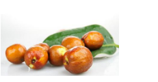

亦舒堂提醒：3种水果最伤胃，胃病患者吃一次“毒”一次！
2017-04-22 00:16:53 来源: 综合 作者:
水果是个好东西，但是胃不好的人一定要管住自己的嘴!亦舒堂专家强调，有些水果营养高，可以帮助消化，如葡萄、草莓、木瓜、苹果、香蕉、桑葚等。但是有些水果胃病患者吃了，不但不能养病，还会加重病情和给身体带来更多负面影响。
1、山楂
很多人觉得山楂开胃，酸甜可口，因此一不小心就会吃很多。但脾胃不好的人少吃山楂，过量吃山楂有可能导致胃结石。
因为山楂中果胶和单宁酸含量高，接触胃酸后容易凝结成不溶于水的沉淀，与食物残渣等胶着在一起形成胃结石，结石可引起胃溃疡、胃出血，甚至胃壁坏死和穿孔。但是把山楂煮熟了吃会减少单宁酸的影响。
2、鲜枣
冬枣有天然“维生素丸”之称，辽宁省大连市中心医院营养科主任王兴国提醒，鲜枣不宜吃太多，否则会伤肠胃。
这是因为大枣的膳食纤维含量很高，一次大量摄入会刺激肠胃，造成胃肠不适。膳食纤维大部分存在于大枣的枣皮中，而大枣的枣皮薄而坚硬，边缘很锋利，如果胃黏膜刚好有炎症或者溃疡，会加重疼痛和不适。

3、猕猴桃
猕猴桃可以通便，富含维生素C，被称为“水果之王”，但是东南大学附属中大医院中医内科朱欣佚副主任医师提醒，猕猴桃属寒性，过食损伤脾胃的阳气，会产生腹痛、腹泻等症状。
猕猴桃中所含的大量维生素C和果胶成分，还会增加胃酸、加重胃的负担，产生腹痛、泛酸、烧心等症状，天气寒冷时症状还会加重。在目前这样寒冷的季节里，胃病(脾胃阳虚)患者应当少吃甚至不吃猕猴桃。
另外，亦舒堂专家认为，胃不好的人应该常吃火麻油。火麻油中含有α -亚麻酸，对过敏反应的中间体PAF(血小板凝集活化因子)有抑制作用。所以认为，α -亚麻酸对过敏反应及炎症有抑制效果，有抑制幽门螺旋杆菌的作用。常用于胃炎、胃溃疡等严重肠胃病的辅助治疗，以及预防胃癌。